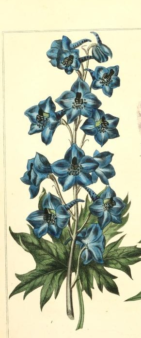
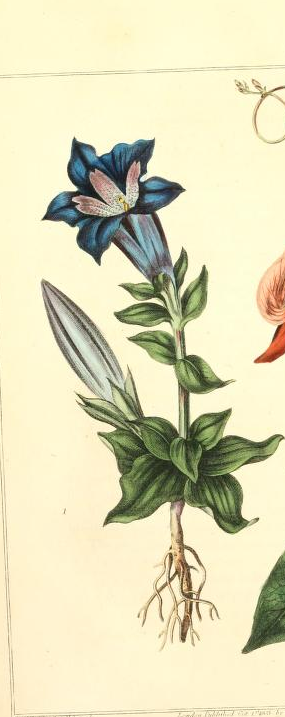

-

1. Delphinium
Remembrance, Condolences
"No-one will remember our work. Our lives will run like sparks through the stubble. I place a delphinium, blue, upon your grave" -Derek Jarman, "Blue" (1993)
As with many blooms in this index, the Delphinium's symbolism and cultural meaning spans across many periods and many places, and yields some contradictory legacies. Delphinium has commonly symbolized joy, happiness, and general goodwill. The etymology of Delphinium comes from the Greek "delphin," meaning dolphin, most likely due to the flower's resemblance to the dorsal fin on dolphin's backs. According to other sources, the flower originates from the Greek hero Ajax, who, upon learning the great Achilles' armor would be gifted to Odysseus, threw himself down upon his own sword. Delphiniums bloomed where his blood spilled.
Practically speaking, the Delphinium has been used to drive away scorpions and to protect against their stings, and thus, also carries an association with warding off evil spirits and negative encounters. Presently, however, the flower is most commonly associated with commemoration and remembrance, and is gifted most commonly today as a symbol of condolence.
-

2. Gentian
Victory
"Beside the brook and on the umbered meadow,/Where yellow fern-tufts fleck the faded ground,/With folded lids beneath their palmy shadow/The gentian nods in dewy slumbers bound." -Sarah Helen Williams, "A Still Day in Autumn"
The Gentian is usually hailed as one of the only "true blue" blooms in nature, and its name comes directly from King Gentius of Illyria who, legend has it, initially discovered the plant's healing properties. In spite of its bitter taste, Gentian has been used medicinally for generations, treating everything from skin ailments, fevers, and digestive issues. Gentian grows in a huge range of geographical regions, and thus, its symbolism and cultural meaning vary from context to context. Due to its tendency to grow sharply upright, European traditions have associated the flower with victory; that association strengthens when the helmet-like shape of the Gentian's petals is taken into consideration.
The Gentian species that flourishes in Japan enjoys enormous popularity, and has become strongly tied to the cities of Kumamoto and Nagano. Gentian blossoms have also secured a place in mythological legacies around the world, and has historical ties to the mandrake root in the Middle Ages, which many used in a ritual sense.
-
3. Iris
Faith, Authority, Protection from Evil Spirits
"What in your life is calling you,/When all the noise is silenced,/The meetings adjourned...The lists laid aside,/And the Wild Iris blooms/ By itself in the dark forest.../What still pulls on your soul?" -Rumi
The Iris can grow in a variety of shades, from the blue depicted here to yellow, purple, and silvery white. Some speculate these multi-colored shades give the iris its name; Iris, or the messenger of the gods, made her journeys across rainbows that tracked all over the sky. Mythologically, Iris has been associated with guiding the spirits of women and girls to the underworld, which is why many graves of women are decorated with irises in Greece today.
Historically speaking, it is difficult to divorce the iris from its religious connotations in Western contexts. In literature, the iris has been promenantly featured in Dante's Inferno, wherein wreaths of irises adorn twenty-four Elders who give him the promise of Paradise. In some renderings of the Virgin Mary, irises are often shown to display a sense of divine suffering, as many have likened their shape to that of a sword. More literally, they resemble a fleur-de-lis, and therefore can be closely tied to representations of the Trinity.

-
4. Jacob's Ladder
Please Come Down
In Latin name for Jacob's Ladder is Polemonium reptans, which roughly translates to "creeping plant." This proves to be a somewhat apt name for the flower we commonly refer to as Jacob's Ladder, as the plant itself behaves more like a vine than a shrub or bush. Its folliage also grows in an almost ladder-like pattern, thus its more familiar name.
Jacob's Ladder, of course, invokes the biblical story of Jacob, the son of Isaac, dreaming of a ladder connecting heaven to earth. In some symbolic contexts, the plant means "to come down," which refers to an optimistic view of a ladder between paradise and earth potentially allowing one to travel back and forth. From a less overtly religious perspective, the bloom is also closely associated with expectation or anticipation, which has made it a somewhat popular gift for occasions like weddings and graduations.

-
5. Love-in-the-Mist/Devil-in-a-Bush
You Puzzle Me
Also called the Nigella flower, Love-in-the-Mist or Devil-in-a-Bush invoked a feminine figure with loose hair in antiquity; this is why its colloquial names carry a certain romantic connotation. On the other hand, however, gifting a Nigella bloom to another began to signify a wish to be left alone by the Middle Ages, which is where the flower's negative symbolism and names come from. Ultimately, Love-in-the-Mist's legacy is one of love, though usually unhappy love or unrequited love.
Love-in-the-Mist also carries a medicinal legacy, as many would use its black seeds to relieve muscular spasms and pain and also as a sedative. Where Nigella bloomed in the wild, it was considered a particularly useful weed that, when burned, kept vermin at bay and was generally acknowledged to protect against the banal interference of worms, fleas, and gnats. Though it has been deemed a weed in the past, it currently enjoys a more coveted status, and has found a huge uptick in popularity over the past century and a half.